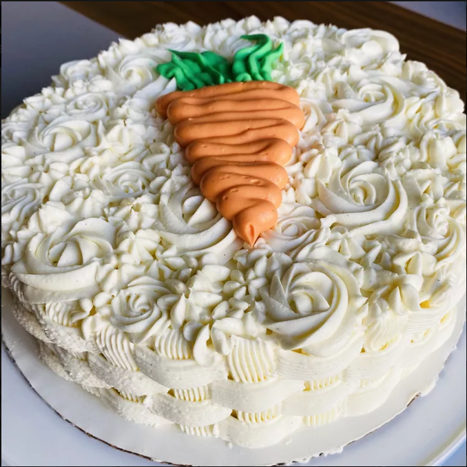

Whipped Cream Cream Cheese Frosting

Description
This whipped cream cheese frosting is so decadent everyone will be asking if they can lick the bowl! It pipes very well.
Ingredients
- heavy whipping cream
- cream cheese
- white sugar
- salt
- vanilla extract
Steps
- Beat whipping cream in a mixing bowl until stiff peaks form; set aside.
- Combine cream cheese, sugar, salt, and vanilla in a large bowl. Beat until smooth, then fold in whipped cream.